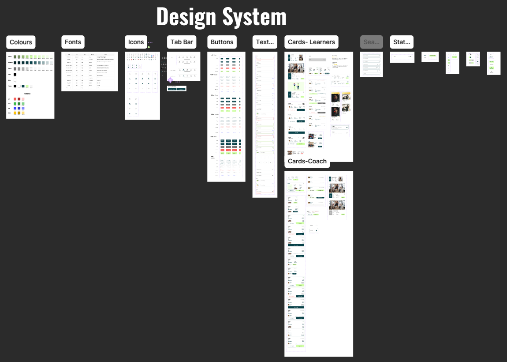
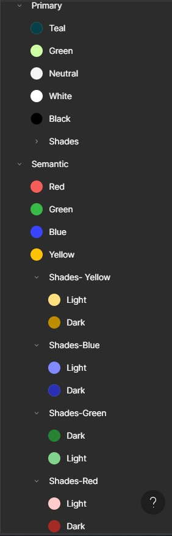
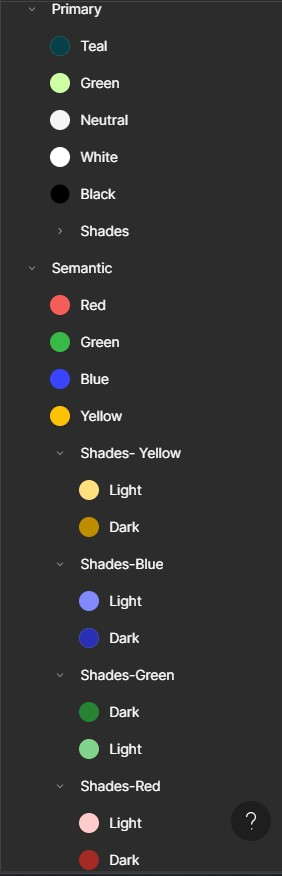
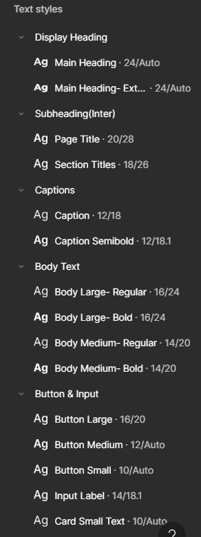
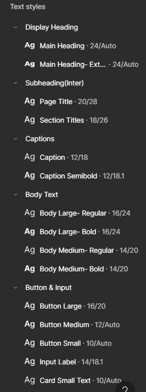
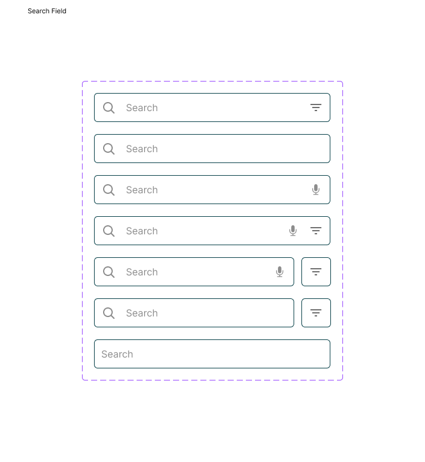
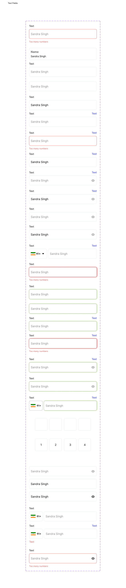

← Back to Work
← Back to Work
Design System- All components
All the reusable components built from scratch

Colour Palette
Colors were selected to highlight the brand’s athletic and dynamic concept
 

Font
Interactive preview when hovering
 

Search Fields
Interactive preview when hovering

Textfields
Interactive preview when hovering
